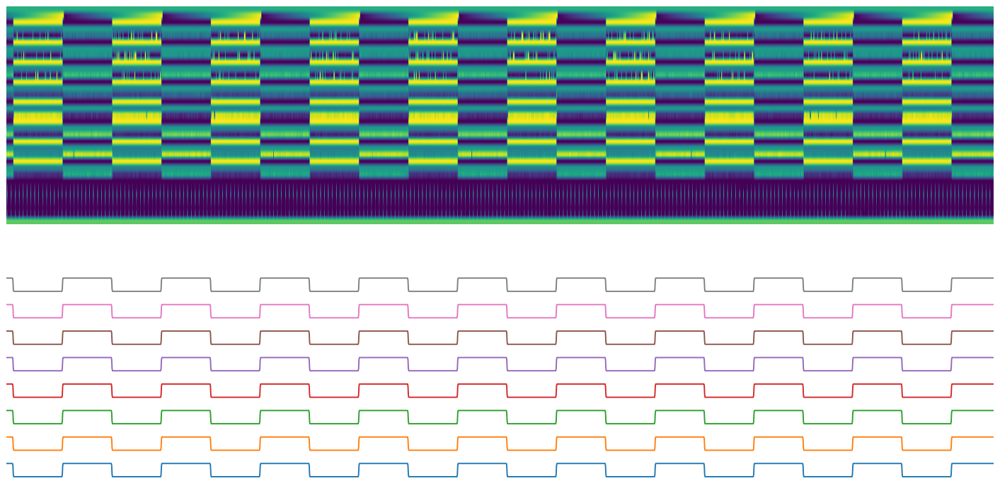
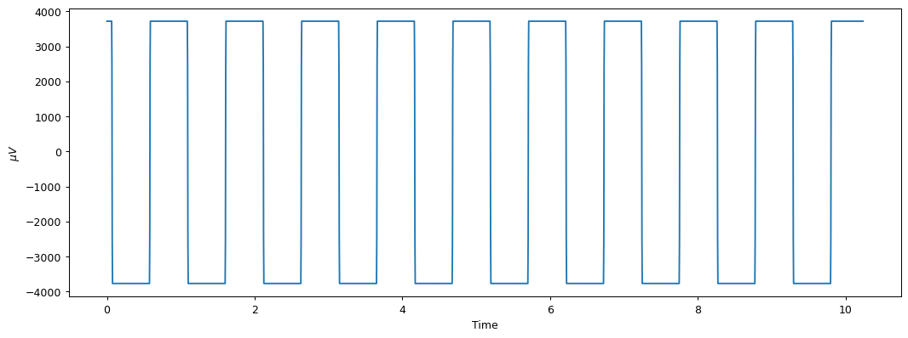

Appendix 1 - Raw data processing¶
Data cleaning¶
This appendix describes the process to validate RAW data according to the official guide, this procces must be implemented before to the deserialization.
[3]:
BIN_HEADER = 0xa0
[13]:
consumer_binary = KafkaConsumer(bootstrap_servers=['localhost:9092'],
value_deserializer=pickle.loads,
auto_offset_reset='latest',
)
consumer_binary.subscribe(['binary'])
openbci = Cyton('serial', '/dev/ttyUSB1', capture_stream=True, daisy=False)
openbci.command(cnt.DEFAULT_CHANNELS_SETTINGS)
openbci.command(cnt.TEST_2X_SLOW)
openbci.start_stream()
binary = b''
for message in consumer_binary:
binary += message.value['data']
if len(binary) >= (250*33*10):
openbci.stop_stream()
break
WARNING:kafka.coordinator.consumer:group_id is None: disabling auto-commit.
WARNING:kafka.coordinator.consumer:group_id is None: disabling auto-commit.
[65]:
data = np.array(list(binary))
raw_data = data.copy()
The raw data is reshaped with 33 bytes width. We just need to align the array with the BIN_HEADER (top of image) each 33 bytes.
[85]:
# Search for the the first index with a `BIN_HEADER`
start = [np.median(np.roll(data, -i, axis=0)[::33]) == BIN_HEADER for i in range(33)].index(True)
# Fix the offset to complete 33 bytes divisible array
end = (data.shape[0]-start)%33
data_align = data[start:-end]
data_align = data_align.reshape(-1, 33)
# The offset could be used for the next binary data
remnant = binary[-end:]
show(data_align)

Binary deserialization¶
In this process we convert validated RAW data into EEG microvolts data packages, according to the official guide.
EEG deserialization¶
[46]:
eeg_data = data_align[:, 2:26]
eeg_data.shape
[46]:
(2559, 24)
This 24 elements of 8 bits each contain 8 elements of 24 bits, for example, for the first row:
[47]:
row = eeg_data[0]
row.shape, row
[47]:
((24,),
array([ 2, 138, 98, 2, 138, 121, 2, 137, 166, 2, 138, 81, 2,
138, 30, 2, 138, 213, 2, 138, 235, 2, 138, 145]))
[48]:
row = row.reshape(-1, 3) # 3 bytes
row.shape, row
[48]:
((8, 3),
array([[ 2, 138, 98],
[ 2, 138, 121],
[ 2, 137, 166],
[ 2, 138, 81],
[ 2, 138, 30],
[ 2, 138, 213],
[ 2, 138, 235],
[ 2, 138, 145]]))
Signed 24-bits (3 bytes) integer to Signed 32-bits integer¶
[49]:
def assert_(stct, data, validate):
value = rawutil.unpack(stct, data)[0]
if value == validate:
print(f'OK | {value} = {validate}')
else:
print(f'NO | {value} != {validate}')
format_ = '>u'
assert_(format_, [0x7F, 0xFF, 0xFF], 8388607) # max
assert_(format_, [0xFF, 0xFF, 0xFF], -1) # mid
assert_(format_, [0x80, 0x00, 0x01], -8388607) # min
assert_(format_, [0x5D, 0xCB, 0xED], 6147053) # other
assert_(format_, [0xA2, 0x34, 0x13], -6147053) # other inverted
OK | 8388607 = 8388607
OK | -1 = -1
OK | -8388607 = -8388607
OK | 6147053 = 6147053
OK | -6147053 = -6147053
With the correct unpack method, we can unpack the complete array by iteration:
[50]:
eeg = np.array([[rawutil.unpack('>u',bytes(ch))[0] for ch in row.reshape(-1, 3).tolist()] for row in eeg_data])
eeg.shape, eeg[0]
[50]:
((2559, 8),
array([166498, 166521, 166310, 166481, 166430, 166613, 166635, 166545]))
Signed 32-bits to Volts¶
The ADS1299 give us a scale factor to convert the counts to volts (or microvolts), it depends on gain and a reference voltage
[51]:
gain = 24
vref = 4.5 # in volts
scale_factor_for_v = vref / (gain * ((2 ** 23) - 1))
scale_factor_for_uv = vref*1e6 / (gain * ((2 ** 23) - 1))
scale_factor_for_v, scale_factor_for_uv
[51]:
(2.235174445530706e-08, 0.022351744455307063)
[52]:
eeg_v = eeg * scale_factor_for_v
eeg_uv = eeg * scale_factor_for_uv
[93]:
plt.figure(figsize=(14, 5), dpi=90)
ch0 = eeg_uv.T[0]
t = np.linspace(0, ch0.shape[0]/250, ch0.shape[0])
plt.plot(t, ch0)
plt.xlabel('Time')
plt.ylabel('$\mu V$')
plt.show()
